Developing an FSK receiver step-by-step
Configure the GNU Radio environment
When you first start GNU Radio Companion, you are presented with an Options block and a Variable block. The Options block allows you to enter parameters such as the Title, Author, Description and also allows you to decide if the GUI elements will use the WX or QT environments (WX is the default).
Hint: When using GNU Radio Companion if you cannot find the block you are looking for in the right-hand pane, click on the magnifying glass in the menu bar and this will enable you to do a text search
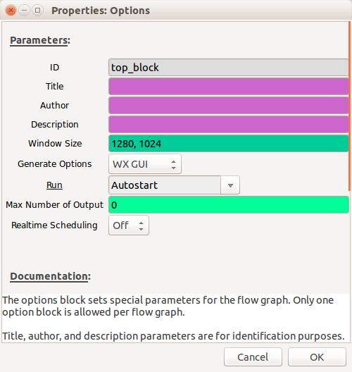
The sample rate must be at least twice the maximum frequency (of the modulated data - not the carrier signal), but the higher the sample rate, the clearer the signal will be, which initially will help aid signal identification. The default is 32,000, but I would recommend at least 4,000,000 (4e6 is an easier way to write this, as you don't need to count the zeros!)
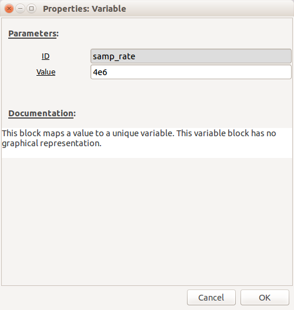
Configure the receiver
Depending on which SDR you have will depend on which options you set here. All of the main receivers can be controlled using the "osmocom Source". The "Device Arguments" settings for different SDRs can be found here. However, if you are using an RTL-SDR, you can also just use the "RTL-SDR Source".
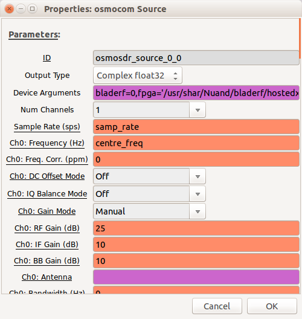
The sample rate will already be pre-populated with the "samp_rate" variable. Set "Ch0: Frequency" to be "centre_freq" and then create a new variable called "centre_freq" with a value near your target carrier frequency.
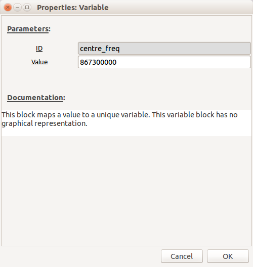
Although you may need to increase the gains at a later stage if the signal is too weak, initially, use the following settings:
- Ch0: RF Gain - 0dB
- Ch0: IF Gain - 10dB
- Ch0: BB Gain - 10dB
Leave everything else at the defaults.
Select a "WX GUI FFT Sink" and connect it to the output of the receiver by clicking on the receiver output and then clicking on the "WX GUI FFT Sink" input - an arrow will link them together (if you want to unlink two blocks, click on the link and drag - it will disappear).
Note: By default the inputs and outputs are blue on these blocks, this denotes the type (blue = complex data, orange = float etc.) If the colours do not match on the connecters you are trying to connect together you will get a type-mismatch error and the arrow will go red.
In "WX GUI FFT Sink" set "Peak Hold" to "On", this will ensure that any signals that appear will stay displayed, even if they are transient:
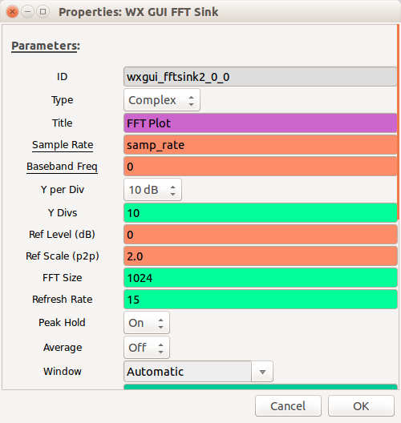
You are now ready to start the receiver - click on the gears icon in the menu bar and the flow-graph will start. The FFT sink displays 4MHz of bandwidth (your sample rate is 4 million and therefore the receiver is simultaneously sampling 4 million signals every second). The display is showing you everything that is being received in the frequency domain, so every peak is a different signal. If you were to tune through the FM broadcast band (87.5 – 108.0 MHz) each peak would be a different radio broadcast signal. FFT is Fast Fourier Transform - feel free to read all about it if you enjoy your maths! But understanding how it works is not required. Below is the output I saw when I started my receiver using the centre frequency 867.3MHz, which is in the ISM band that's generally used for devices that form the Internet of Things:
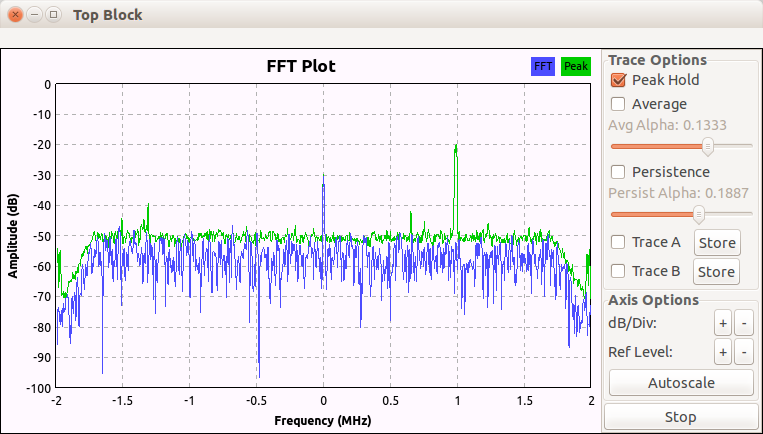
I have no idea what this signal is, but thought it would be a great opportunity to test out my methodology against, so the remainder of this receiver development example is based on this signal. Looking at the frequency, it is around 1Mhz higher than my centre frequency, so about 868.3MHz.
The flow-graph can be stopped by closing the FFT window.
Visualising the signal
So far we know that there is a signal (which happens to be repeating periodically) at around 868.3MHz, but we have no idea about what that signal is. The next stage is to save it to a file so we can do some post-processing. Add a "File Sink" and connect it to the output of the "osmocom Source". Set the filename to something sensible - I always include the sample rate within the filename, so use something like "4M_received_baseband". Restart the flow-graph by clicking on the gears icon and record enough data so that it includes the signal of interest.
Note: SDRs generate very large amounts of data - a recording lasting only a few seconds can result in many tens of megabytes of data, so experiment first!
Now we have a recording we can visualize the signal a bit better using a tool called Baudline, which is an excellent tool for RF visualization that can be very helpful for signals identification. Unfortunately a bug in Baudline means that it does not like file sizes greater than 50Mb. So, before you can load it into Baudline you'll need to split your file into 50Mb chunks:
<pre> split -b50m 4M_received_baseband part </pre>
This should result in a series of files called "parta, partb, partc etc."
Start up Baudline:
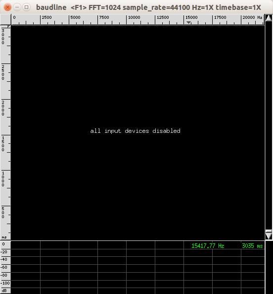
Right-click to open the main menu -> input -> open file. Make sure you select your "partx" file rather than "4M_received_baseband".
A window will appear with a range of options; select the following:
- Sample rate: "Custom - 4000000"
- Channels: 2
- Tick "quadrature" and "flip complex"
- Decode Format: 32 bit float
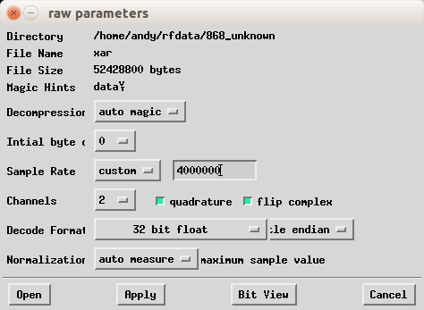
Then click "Open"
The file will be displayed graphically with time vertically and frequencies displayed horizontally.
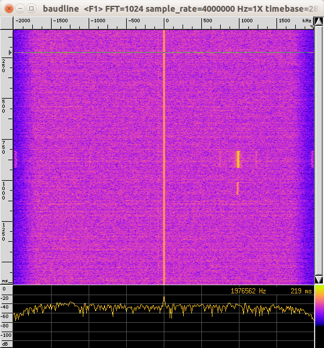
You may need to play with the colours to make the signal clearer (main menu -> input -> colour aperture)
If you look carefully at the output, you can see a squiggly yellow line - that is the signal! You can zoom in and out of the time domain using Alt-up arrow and Alt-down arrow. If you want more detail in the frequency domain you need to change the FFT "bin size" (main menu -> process -> transform size).
Signal identification
If you zoom in it looks like this:
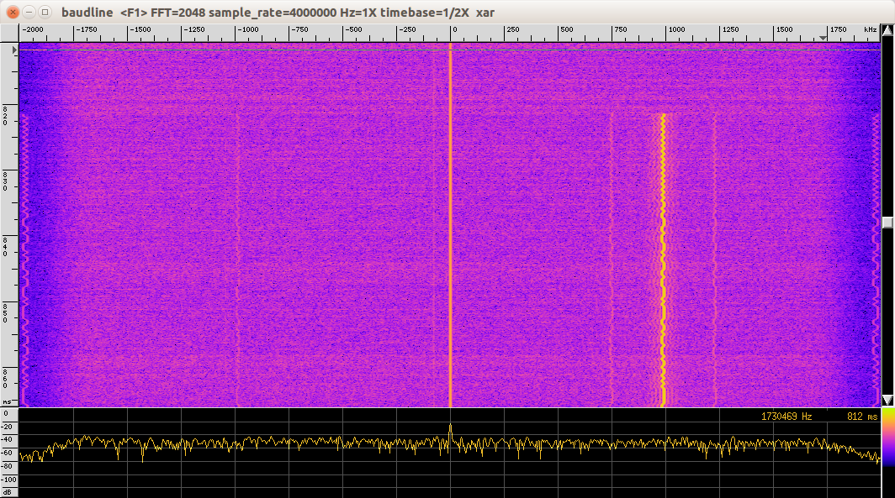
As the line is moving from left to right and the horizontal axis is frequency, this looks very much like Frequency Shift Keying. Also, when data is sent over RF it always starts with something called a "preamble", which is used to help denote the start of some data and also synchronise the receiver with the data. Preambles are normally 101010101010...
Centering the signal
Going back to GNU Radio companion, we now need do some more processing to make sure the signal is centered. First, replace the receiver with a "File Source" block that will replay the "partx" file that contains the signal. Also, set the file repeat to "Yes". Next, add a "Throttle" block after the "File Source", so that we don't overwhelm the CPU on the PC running GNU Radio Companion.
Add a "Signal Source" block with the Frequency set to "-950e3" (I said the signal looked like it was about 1MHz higher than the centre - it was actually 950KHz)
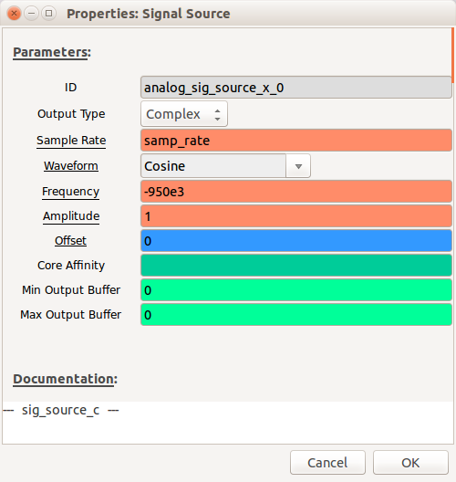
Add a "Multiply" block and connect the "Throttle" output and "Signal Source" output to the two "Multiply" inputs. Add the "Multiply" output to the "WX GUI FFT Sink" and your flow-graph should look like this:
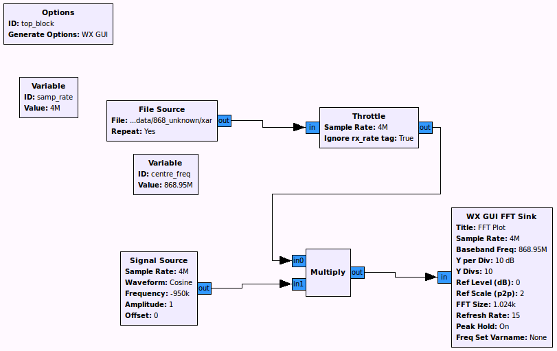
Start the flow-graph and the signal will now be centred:
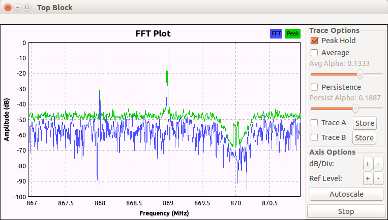
Filtering
We now want to focus in on the signal of interest and filter out any other signals present in the baseband we have recorded. Add a "Low Pass Filter" block between the "Multiply" block output and the "WX GUI FFT Sink" input.
- Set "Cutoff Freq" to 150e3 - this is the maximum frequency (of the modulated signal) that we want to display
- Set "Transition Width" to 50e3 - this is the bandwidth over which the filter will act i.e. the smaller the number the more aggressive the filter.
Restart the flow-graph and you should see something like this:

Demodulating
We are making the assumption that based on the output we observed in Baudline, the modulation scheme is FSK (to be precise, "2-FSK" or "Binary FSK" where the frequency is shifted one way for a "0" and the other for a "1"). Therefore, we need to add an FSK demodulator - there are many different modulators available within GNU Radio Companion, but the one we want is the "Quadrature Demod".
Add a "Quadrature Demod" and set the "Gain" to be 1.
Add a "File Sink" and set its input type to be "float" (orange coloured) and set the filename to be something like "4M_filtered_demod"
Connect the output of the "Low Pass Filter" to the input of the "Quadrature Demod"
Connect the output of the "Quadrature Demod" to the input of the "File Sink"
In "File Source" set "Repeat to "No"
Your flow-graph should now look like this:
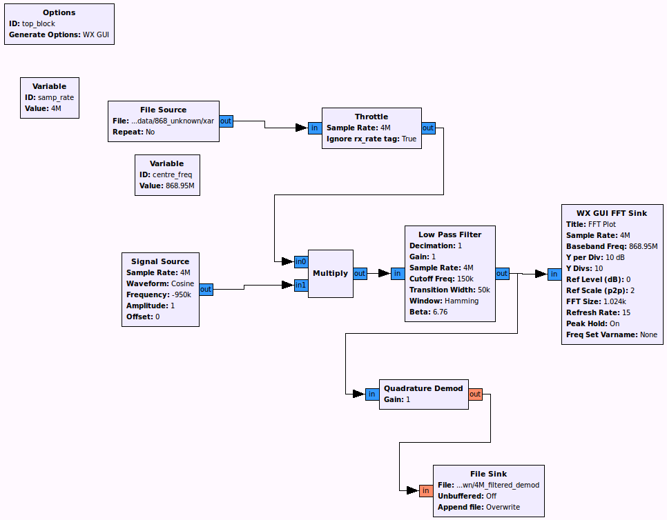
Run the flow-graph and it will produce a file that hopefully will contain demodulated data.
Visualising the data
We should now have a demodulated file that can be loaded into Baudline.
Note: Remember, if your "4M_filtered_demod" file is larger than 50Mb then you will need to split it into chunks again.
Start Baudline and load your demod file - use all the same parameters as before, but this time change "Channels" to 1 (it is no longer a complex baseband signal - it is a demodulated signal). Click "Open" and it should look something like this:
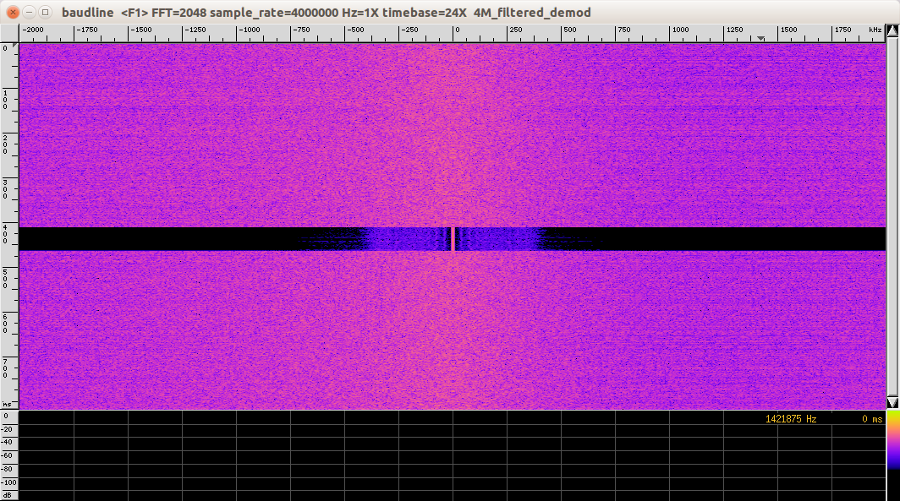
Ensure that the separate "Waveform" window is open (main menu -> displays -> waveform)
The output in the "Waveform" window can be zoomed in or out vertically and horizontally using Alt + cursor keys. To move the signal up and down just use the cursor keys. The output should initially look something like this:
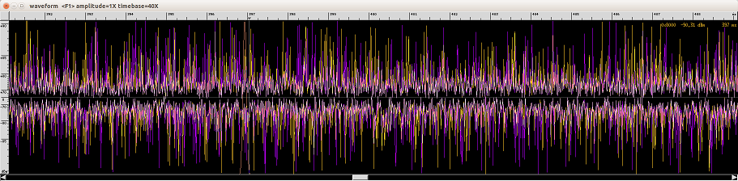
Although it seems quite clear in the main Baudline window, you'll need to search for your demodulated signal :-)
By scrolling out horizontally, you should see lots of noise and then a section of no noise - this is your signal:
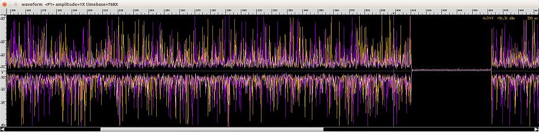
Unfortunately, when you try and zoom in, the data is almost unrecognizable, because of the level of noise affecting it. If this is the case it means that you need to reduce the "Cutoff Freq" and "Transition Width" of your "Low Pass Filter". After some experimentation, some reasonable values were chosen:
- "Cutoff Freq" = 50e3
- "Transition Width" = 20e3
Now when the signal was loaded in Baudline it looked like this:
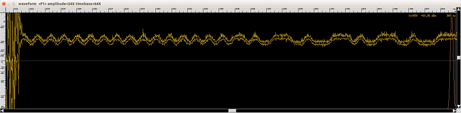
These are the data bits represented by the original "squiggly line" we saw in Baudline when we looked at the complex baseband signal. It also confirms that the data was modulated using 2-FSK.
Further filtering and clock recovery
As we can see from the signal, it still looks very noisy, so we need to do some further, more accurate filtering and in order to do this we need to estimate the Baud rate (the number of symbols per second), but first we need to discuss how the data is represented. It looks like the peak represents a "1" and a trough for a "0", however it's not quite as simple as that; it is in fact encoded using something called "Manchester encoding". Manchester encoding is what is known as a "line code" and ensures frequent voltage transitions, directly proportional to the clock rate, which helps clock recovery. What this actually means is that a "0" is represented by a transition to low and a "1" is represented by a transition to high.
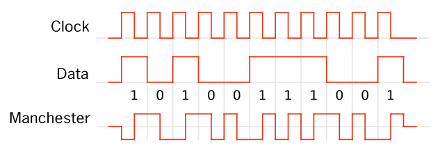
If we look at the signal with respect to the scale, we can see that by choosing a peak, its just short of 2.5 bits (transition down, transition up, start of transition down) per millisecond, which if you know your standard Baud rates (they don't always conform to standard Baud rates!), it looks like 2400Baud (simple FSK data rates are usually very slow, as data packets are typically quite small)
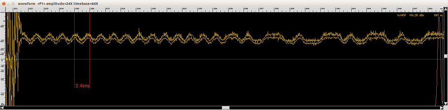
Ok, now we think we have the Baud rate, we can accurately add a new "Low Pass Filter" in between the "Quadrature Demod" and the "File Sink". The settings should be as follows:
- Cutoff Freq = 2400 (the Baud rate)
- Transition Width = 1200 (half the Baud rate)
Also, you may have noticed that the flow-graph has been running very slowly since we started demodulating the data. Let's try and work out why:
The sample rate is currently 4,000,000 and the Baud rate is 2400, so if we divide 4,000,000 by 2400 we get the number of samples per symbol - 1666! That's why it's running slowly... we don't need anywhere near 1666 samples to represent each bit.
In the "Low Pass Filter" set "FIR Type" to "Float-Float (Decimating)" and set "Decimation" to 100. This will decimate the signal (reduce the sample rate) by a factor of 100
Now re-run the flow-graph and load the resulting demodulated file into Baudline and the "Waveform view" should now look like this:
Note: When you load the file back into Baudline don't forget that the sample rate has been decimated by 100 and is now, therefore, 40,000 instead of 4,000,000
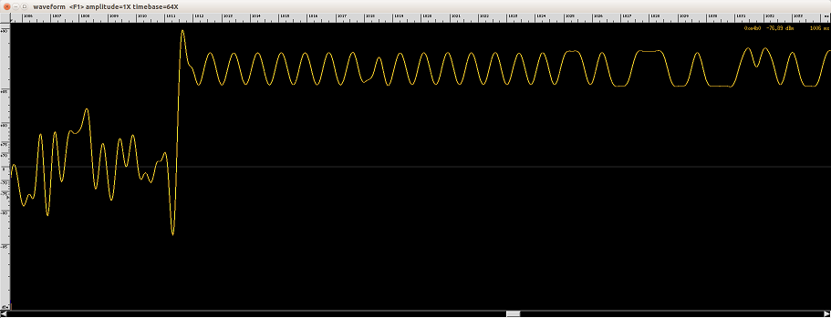
We're not quite ready to recover the bits yet though, as the signal should be alternating about 0dBm (the centre line in the waveform view. It's actually up towards +90dBm, so it needs to be reduced.
Add a "Add Const" block in between the second "Low Pass Filter" and the "File Sink" and set the "Constant" value to be -0.055 (this value was determined through trial-and-error), to reduce the signal level down. The output should now look like this:
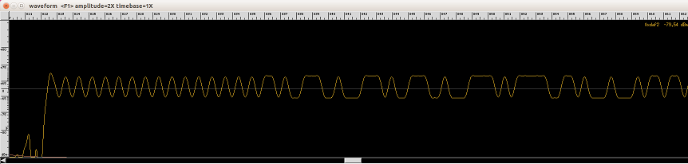
Data recovery
Now we are ready to recover the digital data. First we need to perform clock recovery - add a "Clock Recovery MM" block and set the following values:
- "Gain Omega": 0.01
- "Mu": 0
- "Gain Mu": 0.1
- "Omega Relative Limit": 0.01
If you're interested in what these values mean then read [http://ieeexplore.ieee.org/xpl/login.jsp?tp=&arnumber=1093326&url=http%3A%2F%2Fieeexplore.ieee.org%2Fiel5%2F26%2F23866%2F01093326.pdf%3Farnumber%3D1093326 Timing Recovery in Digital Synchronous Data Receivers] by Mueller and Muller.
The final value we need is "Omega" - this is the number of samples per symbol. We previously calculated this to be 1666 and so decimated the signal by a factor of 100 so "Omega" now needs to be set to 16.66 (1666 / 100).
Add a "Binary Slicer" to the output of the "Clock Recovery MM" block
Add a "File Sink" to the output of the "Binary Slicer" - you'll need to set the input type of the "File Sink" to "Byte" (pink coloured). Set the filename to be something like "bitfile"
Your final flow-graph should look something like this:
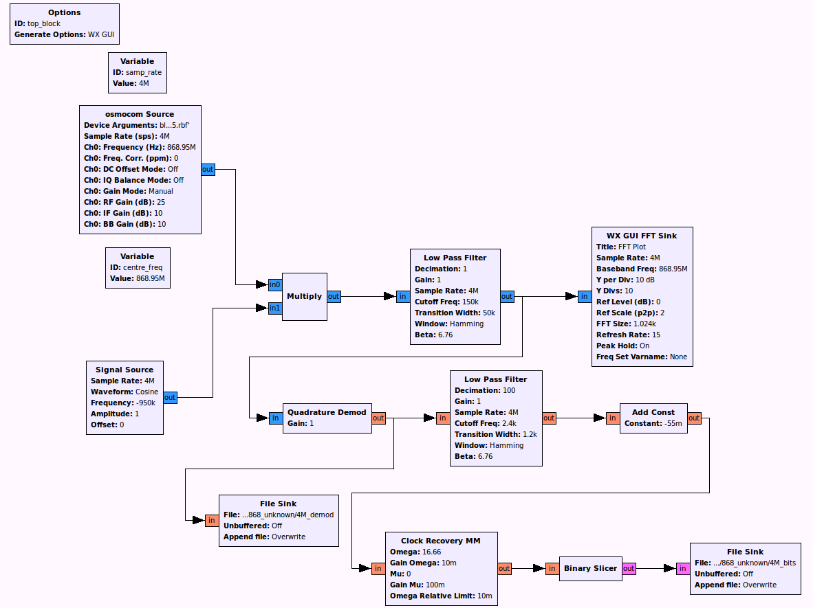
Open up the "bitfile" file in a hex editor. Remember the preamble of "0101010101..."? If you count them, there are four bytes worth (32bits) so you need to search for the preamble in the "bitfile", but if you look carefully, you can see that each byte in the file represents one bit i.e a "0" bit is represented by the byte "00" and a "1" bit is represented by the byte "01", so to search for the preamble you need to search for: "0001000100010001000100010001000100010001000100010001000100010001". The result of the search is shown below, the rest of the data follows the preamble:
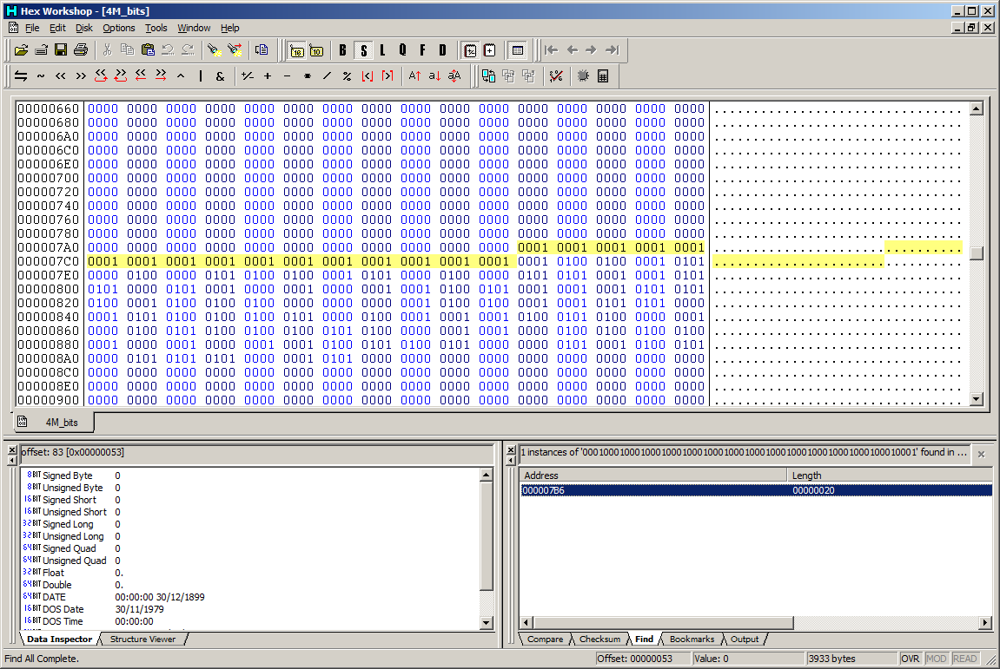
You have now successfully retrieved the data from an RF transmission!
I still have no idea what this signal actually originates from - maybe one of my neighbours has an automatic garage door, or it could be a wireless central heating controller or some other IoT device.
Communicating with the receiver in real-time
Rather than using a file as a sink you can use a "TCP Sink" block, bind it to a socket and receive data from it via TCP